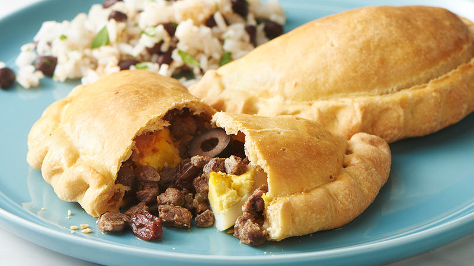

Chilean Beef Empanadas de Pino
Intoduction
Today, I will be making Chilean Beef Empanadas. I chose Chilean Empanadas because they hold a special place in my heart, as they are a connection to my Chilean heritage. Also, Chilean empanadas are superior to Argentinean empanadas. This is a link to the original recipy.

Ingrediants
For the Pino
- 1 Kilo or 2 pounds of ground beef 90%
- 1 cup beef broth
- 2 large or 3 medium onions chopped into small cubes
- 2 tablespoons all-purpose flour
- 2 tablespoons of red pepper or paprika or Merken (Chilean smoked chili)
- ½ teaspoon ground cumin
- salt and pepper
- 4 tablespoons vegtibale oil
Optional
- 20 black olives
- 40 raisins
- 4 hard-boiles eggs
For the dough
- 1 cup whole milk
- 1 cup of warm water
- 1 tablespoon of salt
- 1 kilo or 2 pounds of all-purpose flour
- 2 eggs
- 180 grams/ 6,5 oz of melted shortening, warm
Instructions
- For the Pino, always prepare it the day before, In a large saucepan, heat the oil and fry the meat until lightly browned, about 8 minutes. Add the paprika, salt, pepper, and cumin, and saute for a few minutes. Add the flour, stir well and adjust the seasoning if necessary. Cook for two more minutes. Cool and refrigerate.
- For the dough, make a brine with the milk, water, and salt, stirring to dissolve the salt. Mix the flour and eggs in a large bowl or a stand mixer with the paddle attachment for a minute to incorporate. Add the melted shortening and work a little more. Add the brine with the mixer to form the dough, running on low speed until the dough is soft and flexible. If needed, keep adding water. Separate the dough into 12 or 20 portions and cover with a moist cloth. Work each piece individually rolling until thin. Cut in a circle about 7", and fill fill two tablespoons of Pino, a quarter of a hard-boiled egg, one olive, and 2-3 raisins, if desired. Close by smearing the edge, pressing firmly, and making the folds. Brush with egg wash before baking.
- Preheat the oven to 350°F or 180°C. bake for 30-35 minutes until golden.
- Serve hot.